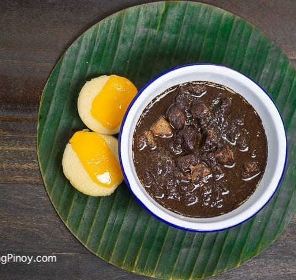

Dinuguan Recipe

Description
Dinuguan is a savoury dish made with diced pork, pork blood and spices.
This classic Filipino pork stew is hearty, boldly flavoured, and delicious
as a main meal with steamed rice.
Ingredients
- 10 oz pork blood
- 1 cup vinegar
- 1 tbsp canola oil
- 1 onion (peeled and chopped)
- 4 cloves garlic (peeled and minced)
- 1 ginger (thumb-sized)
- 1 tbsp fish sauce (patis)
- 1 cup water
- 1 bsp brown sugar
- 2 chilies (siling haba)
- salt and pepper to taste
Steps
- In a bowl, combine pig's blood and 2 tbsp of the vinegar and sti
r well
- In a pot, over medium heat, heat oil and add onions, garlic, and
ginger and cook until softened
- Add pork and cook, stirring occasionally until lightly browned
- Add fish sauce and cook for about 1 to 2 minutes
- Add vinegar and bring to a boil, cook until slightly reduced
- Add water and bring to a boil, lower heat, cover, and continue to
cook for about 15 to 20 minutes until the meat is tender
- Add pork blood, stir out the lumps
- Add brown sugar and stir to dissolve
- Add chili peppers
- Continue to simmer for about 10 minutes until sauce is thickened
- Season with salt and pepper to taste, serve and enjoy!